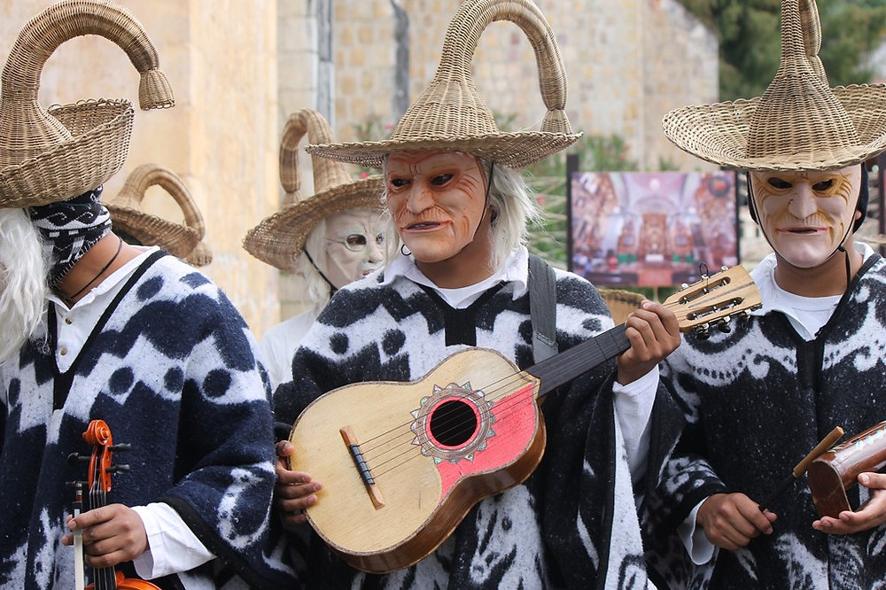
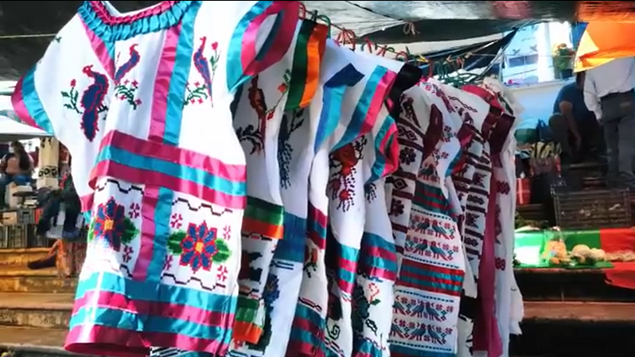

Expresiones culturales

Huehuentones
Representación simbólica del encuentro entre vivos y muertos durante el Día de Muertos.
Medicina tradicional
Prácticas ancestrales de sanación basadas en plantas y rituales espirituales.

Artesanías
Máscaras, textiles y piezas simbólicas que reflejan la identidad mazateca.
Teonanacatl
Hongos alucinógenos que tienen el poder de curar heridas del pasado en buenas manos